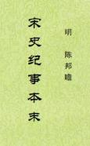

史籍
>
宋史纪事本末
[明]陈邦瞻 编
宋史纪事本末。纪事本末体史书，明陈邦瞻编撰。
初，礼部侍郎临朐冯琦，欲仿《通鉴纪事本末》例，论次宋事，分类相比，以续袁枢之书，未就而没。御史南昌刘曰梧得其遗稿，因属邦瞻增订成编。大抵本于琦者十之三，出于邦瞻者十之七。自太祖代周，迄文、谢之死，凡分一百九目。于一代兴废治乱之迹，梗概略具。

·提要
·太祖代周
·收兵权
·平荆湖
·平蜀
·平南汉
·平江南
·太祖建隆以来诸政
·礼乐议
·治河
·金匮之盟
·吴越归地
·陈洪进纳土
·平北汉
·契丹和战
·西夏叛服
·交州之变
·蜀盗之平
·太宗致治
·营田之议
·至道建储
·咸平诸臣言时务
·契丹盟好
(2)
(3)
(4)
(5)
·天书封祀
(2)
(3)
·丁谓之奸
·明肃庄懿之事
·郭后之废
·温成皇后事
·天圣灾议
·茶盐榷罢
·正雅乐
·庆历党议
(2)
(3)
·夏元昊拒命
(2)
(3)
·侬智高
·王则之乱
·浚六塔二股河
(2)
·英宗之立
·刺义勇
·濮议
·王安石变法
(2)
(3)
(4)
(5)
(6)
(7)
·学校科举之制
(2)
·元丰官制
·西夏用兵
(2)
(3)
·熙河之役
·泸夷
·元祐更化
(2)
(3)
·宣仁之诬
·洛蜀党议
·绍述
·孟后废复
·建中初政
·蔡京擅国
(2)
(3)
(4)
(5)
·花石纲之役
·道教之崇
·金灭辽
(2)
(3)
·复燕云
(2)
·方腊之乱
·群奸之窜
·金人南侵
(2)
(3)
(4)
·二帝北狩
·张邦昌僭逆
·高宗嗣统
·李纲辅政
·宗泽守汴
·两河中原之陷
·南迁定都
·金人渡江南侵
·苗刘之变
·平群盗
(2)
·金人立刘豫
·张浚经略关陕
·吴玠兄弟保蜀
·岳飞规复中原
·顺昌柘皋之捷
·秦桧主和
(2)
(3)
(4)
·金亮之恶
·金亮南侵
(2)
(3)
·建炎绍兴诸政
·孝宗之立
·隆兴和议
(2)
·孝宗朝廷议
(2)
(3)
·陈亮恢复之议
(2)
(3)
·道学崇诎
(2)
(3)
(4)
(5)
·两朝内禅
(2)
·韩侂胄专政
(2)
·北伐更盟
·吴曦之叛
·蒙古侵金
·金好之绝
·李全之乱
(2)
(3)
·史弥远废立
·金河北山东之没
·蒙古取汴
·联蒙灭金
·三京之复
·蒙古连兵
·余玠守蜀
·真魏诸贤用罢
·史嵩之起复
·董宋臣丁大全之奸
·公田之置
·蒙古诸帝之立
·蒙古立国之制
·北方诸儒之学
·蒙古南侵
·郝经之留
·李璮之纳
·贾似道要君
·蒙古陷襄阳
(2)
(3)
(4)
·元伯颜入临安
·二王之立
(2)
(3)
·文谢之死
·陈邦瞻叙
·刘曰梧序
·徐申后序
返回
回首页